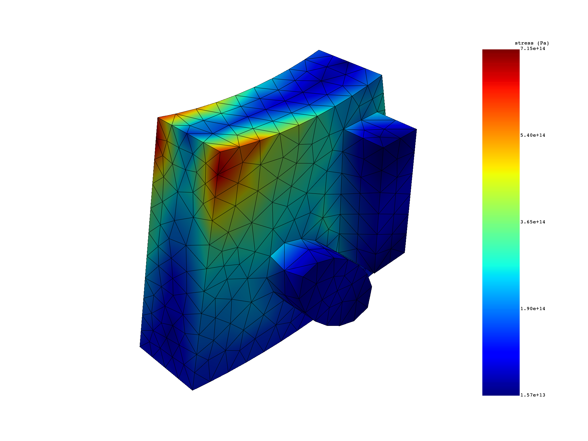
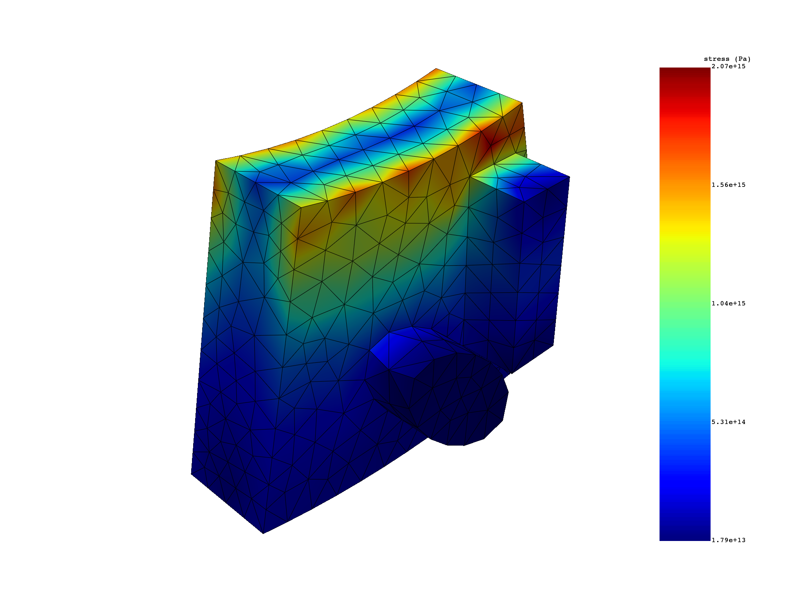
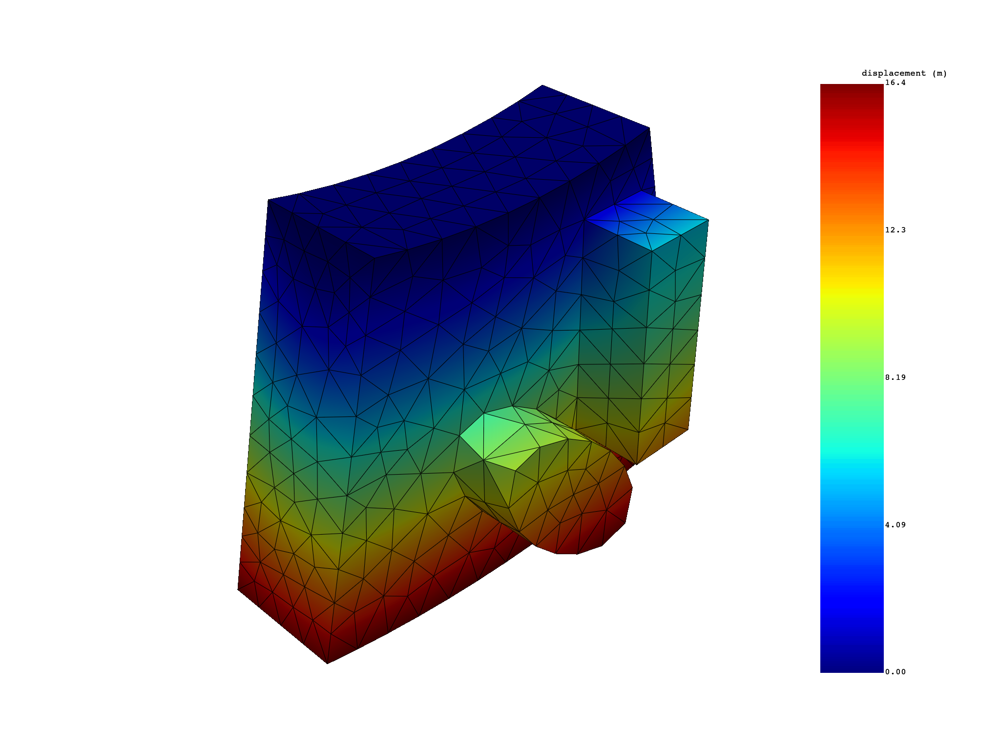

Note
Go to the end to download the full example code
Get base and duplicate sectors (real and imaginary) results for modal cyclic symmetry#
This example shows how to extract results from a modal cyclic symmetry model.
Perform required imports#
This example uses a supplied file that you can
get using the examples module.
from ansys.dpf import post
from ansys.dpf.post import examples
Get Simulation object#
Get the Simulation object that allows access to the result. The Simulation
object must be instantiated with the path for the result file. For example,
"C:/Users/user/my_result.rst" on Windows or "/home/user/my_result.rst"
on Linux.
example_path = examples.download_modal_cyclic()
simulation = post.ModalMechanicalSimulation(example_path)
# print the simulation to get an overview of what's available
print(simulation)
Modal Mechanical Simulation.
Data Sources
------------------------------
/opt/hostedtoolcache/Python/3.8.17/x64/lib/python3.8/site-packages/ansys/dpf/core/examples/result_files/cyclic/modal_cyclic.rst
DPF Model
------------------------------
Modal analysis
Unit system: MKS: m, kg, N, s, V, A, degC
Physics Type: Mechanical
Available results:
- displacement: Nodal Displacement
- reaction_force: Nodal Force
- stress: ElementalNodal Stress
- elastic_strain: ElementalNodal Strain
------------------------------
DPF Meshed Region:
928 nodes
3836 elements
Unit: m
With solid (3D) elements
------------------------------
DPF Time/Freq Support:
Number of sets: 48
Cumulative Frequency (Hz) LoadStep Substep Harmonic index
1 51369.575105 1 1 0.000000
2 114291.419744 1 2 0.000000
3 238849.856755 1 3 0.000000
4 254031.324493 1 4 0.000000
5 337729.470910 1 5 0.000000
6 348699.692284 1 6 0.000000
7 51970.152101 2 1 1.000000
8 51970.152101 2 2 -1.000000
9 126647.471593 2 3 -1.000000
10 126647.471593 2 4 1.000000
11 239807.889703 2 5 -1.000000
12 239807.889703 2 6 1.000000
13 54198.644112 3 1 2.000000
14 54198.644112 3 2 -2.000000
15 157264.852222 3 3 -2.000000
16 157264.852222 3 4 2.000000
17 242073.194077 3 5 -2.000000
18 242073.194077 3 6 2.000000
19 59105.565170 4 1 3.000000
20 59105.565170 4 2 -3.000000
21 194873.849513 4 3 -3.000000
22 194873.849513 4 4 3.000000
23 241988.808784 4 5 3.000000
24 241988.808784 4 6 -3.000000
25 67744.544169 5 1 4.000000
26 67744.544169 5 2 -4.000000
27 218600.039108 5 3 -4.000000
28 218600.039108 5 4 4.000000
29 229679.308122 5 5 4.000000
30 229679.308122 5 6 -4.000000
31 80576.477155 6 1 5.000000
32 80576.477155 6 2 -5.000000
33 192985.645574 6 3 -5.000000
34 192985.645574 6 4 5.000000
35 245990.772448 6 5 5.000000
36 245990.772448 6 6 -5.000000
37 97381.706833 7 1 6.000000
38 97381.706833 7 2 -6.000000
39 166306.784163 7 3 -6.000000
40 166306.784163 7 4 6.000000
41 259986.167834 7 5 6.000000
42 259986.167834 7 6 -6.000000
43 117422.022015 8 1 7.000000
44 117422.022015 8 2 -7.000000
45 141309.163007 8 3 -7.000000
46 141309.163007 8 4 7.000000
47 273449.890447 8 5 -7.000000
48 273449.890447 8 6 7.000000
Get base and duplicate sectors displacement results#
With expand_cyclic=False, the result providers (stress, displacement, and so on) return
results for base and duplicate sectors for a cyclic symmetry model.
# Create displacement operator
u_cyc = simulation.displacement(all_sets=True, expand_cyclic=False)
The output dataframe print displays the organization of the data. The label “base_sector” gives access to base sectors results with base_sector=True and duplicate sector with base_sector=False for all modes. The print also displays that there are no duplicate sectors for the first 6 modes. Indeed, modes with harmonic index 0 have 0.0 displacement, stresses… on duplicate sectors.
# print(u_cyc)
print(simulation.time_freq_support)
s_cyc = simulation.stress_eqv_von_mises_nodal(all_sets=True, expand_cyclic=False)
# plot mode 7 base sector (real) result
s_cyc.plot(set_ids=7, base_sector=1)
# plot mode 7 duplicate sector (imaginary) result
s_cyc.plot(set_ids=7, base_sector=0)
- 
- 
DPF Time/Freq Support:
Number of sets: 48
Cumulative Frequency (Hz) LoadStep Substep Harmonic index
1 51369.575105 1 1 0.000000
2 114291.419744 1 2 0.000000
3 238849.856755 1 3 0.000000
4 254031.324493 1 4 0.000000
5 337729.470910 1 5 0.000000
6 348699.692284 1 6 0.000000
7 51970.152101 2 1 1.000000
8 51970.152101 2 2 -1.000000
9 126647.471593 2 3 -1.000000
10 126647.471593 2 4 1.000000
11 239807.889703 2 5 -1.000000
12 239807.889703 2 6 1.000000
13 54198.644112 3 1 2.000000
14 54198.644112 3 2 -2.000000
15 157264.852222 3 3 -2.000000
16 157264.852222 3 4 2.000000
17 242073.194077 3 5 -2.000000
18 242073.194077 3 6 2.000000
19 59105.565170 4 1 3.000000
20 59105.565170 4 2 -3.000000
21 194873.849513 4 3 -3.000000
22 194873.849513 4 4 3.000000
23 241988.808784 4 5 3.000000
24 241988.808784 4 6 -3.000000
25 67744.544169 5 1 4.000000
26 67744.544169 5 2 -4.000000
27 218600.039108 5 3 -4.000000
28 218600.039108 5 4 4.000000
29 229679.308122 5 5 4.000000
30 229679.308122 5 6 -4.000000
31 80576.477155 6 1 5.000000
32 80576.477155 6 2 -5.000000
33 192985.645574 6 3 -5.000000
34 192985.645574 6 4 5.000000
35 245990.772448 6 5 5.000000
36 245990.772448 6 6 -5.000000
37 97381.706833 7 1 6.000000
38 97381.706833 7 2 -6.000000
39 166306.784163 7 3 -6.000000
40 166306.784163 7 4 6.000000
41 259986.167834 7 5 6.000000
42 259986.167834 7 6 -6.000000
43 117422.022015 8 1 7.000000
44 117422.022015 8 2 -7.000000
45 141309.163007 8 3 -7.000000
46 141309.163007 8 4 7.000000
47 273449.890447 8 5 -7.000000
48 273449.890447 8 6 7.000000
Get displacement results on the first sector with a cyclic phase#
with phi=0°
u_cyc = simulation.displacement(all_sets=True, expand_cyclic=[1])
u_cyc.plot()
# with phi=90°
u_cyc = simulation.displacement(
all_sets=True, expand_cyclic=[1], phase_angle_cyclic=90.0
)
u_cyc.plot()
# with phi=45°
u_cyc = simulation.displacement(
all_sets=True, expand_cyclic=[1], phase_angle_cyclic=45.0
)
u_cyc.plot()
- 
Get nodal stress results on the first sector with a cyclic phase#
s_cyc = simulation.stress_eqv_von_mises_nodal(
all_sets=True, expand_cyclic=[1], phase_angle_cyclic=45.0
)
print(s_cyc)
s_cyc.plot()
results S_VM (Pa) ...
set_ids 1 2 3 4 5 6 ...
node_ids ...
225 6.7583e+12 1.7719e+13 1.4254e+14 2.0944e+14 1.4367e+15 2.8827e+14 ...
234 1.3612e+13 1.9299e+13 1.2883e+14 2.3331e+14 1.2463e+15 6.9698e+14 ...
235 1.7888e+13 2.7823e+13 1.2641e+14 2.0943e+14 1.0789e+15 7.6976e+14 ...
732 9.2833e+12 3.3555e+13 1.5368e+14 2.1823e+14 1.2654e+15 2.7051e+14 ...
7 2.6513e+13 2.9169e+13 2.1806e+14 1.1260e+14 8.5468e+14 6.8131e+14 ...
36 2.7791e+13 1.4241e+13 1.6849e+14 1.2553e+14 9.7302e+14 8.2799e+14 ...
... ... ... ... ... ... ... ...
Get elemental_nodal stress results on the first sector with a cyclic phase#
Elemental nodal is the default result location for stress and strain.
s_cyc = simulation.stress(set_ids=[7], expand_cyclic=[1], phase_angle_cyclic=45.0)
print(s_cyc)
# To average the result for each element
to_elemental = simulation.stress_elemental(
set_ids=[7], expand_cyclic=[1], phase_angle_cyclic=45.0
)
print(to_elemental)
to_elemental.plot()
results S (Pa)
set_ids 7
node 0 1 2 3
element_ids components
1859 XX -1.0954e+12 -1.0954e+12 -1.0954e+12 -1.0954e+12
YY 2.4527e+12 2.4527e+12 2.4527e+12 2.4527e+12
ZZ 7.8873e+12 7.8873e+12 7.8873e+12 7.8873e+12
XY 1.8877e+13 1.8877e+13 1.8877e+13 1.8877e+13
YZ 2.4626e+12 2.4626e+12 2.4626e+12 2.4626e+12
XZ -8.5112e+12 -8.5112e+12 -8.5112e+12 -8.5112e+12
... ... ... ... ... ...
results S (Pa)
set_ids 7
element_ids components
1859 XX -1.0954e+12
YY 2.4527e+12
ZZ 7.8873e+12
XY 1.8877e+13
YZ 2.4626e+12
XZ -8.5112e+12
... ... ...
Get nodal stress results expanded#
s_cyc = simulation.stress_eqv_von_mises_nodal(set_ids=[7])
s_cyc.plot()
Total running time of the script: ( 0 minutes 5.666 seconds)